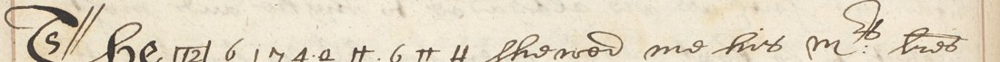

6 1 7 4 a H 6 H H, and a second boxed code [E4]. Digges printed the letter in The Compleat Ambassador (1655) but set the cipher as figures, so it was never glossed. The run’s pattern (first sign = seventh, sixth = eighth = ninth) fits no English word as a simple substitution. With nineteen cipher signs across this record and R8361, and no Walsingham key of 1570–73 known, nothing more can be read. The letters and the context are identified; the cipher stays open.01 The two pages
Image P1 (f. 112v) ends Leicester’s letter to Walsingham (“Yor assured frend R. Leicester”) and begins Walsingham to Burghley. Image P2 (f. 113r) ends that letter, “the xxvth of June 1571”, and begins “Elizabeth R. … To the right trustie and welbeloved Frauncis Walsingham Esqr or Amba: resident wth or good brother the Frenche Kinge”. The Queen’s letter concerns the French ambassador, M. de L’Archant, captain of the guard of the Duke of Anjou, and the coming of the Marshal Montmorency. It is written entirely in clear.

02 The cipher

In context, [12] with the run names the man who showed Walsingham his master’s letters, which asked him to warn “A.” of a practice to steal away the Queen of Scots. [E4] is the informant “who discovereth it to his Master”. Digges (p. 106) prints the run as “1627 40q0n 6> nu” and [E4] as “54”. Both are compositor’s guesses at the signs, not readings.
03 What was tried
- Print: the letter is in Digges 1655 with the cipher as figures. CSP Foreign 1569–71 gives no decipherment.
- Pattern: A B C D E F A F F fits no English word or name under one-to-one substitution. The cipher is homophonic, uses code signs, or is several codes.
- Siblings: the letter run in R8361 (
7 7 6 + w 5 ‡ 6 3 ∩ 6, Nov 1572) shares signs but gives no crib. - Keys: no Walsingham–Burghley key of 1570–73 is on DECODE or in Tomokiyo’s Elizabethan tables.
04 What remains open
- The nine-sign run: too short, with no key.
- Codes [12] and [E4]: each is used once, and no key material exists.
05 Sources
- British Library, Harley MS 260 ff. 112v–113r, images via DECODE R8356.
- Dudley Digges, The Compleat Ambassador (London 1655), pp. 106–107.
- Sibling write-up: Walsingham’s letter-book, November 1572.
Notes, transcription and profile: r8356/.